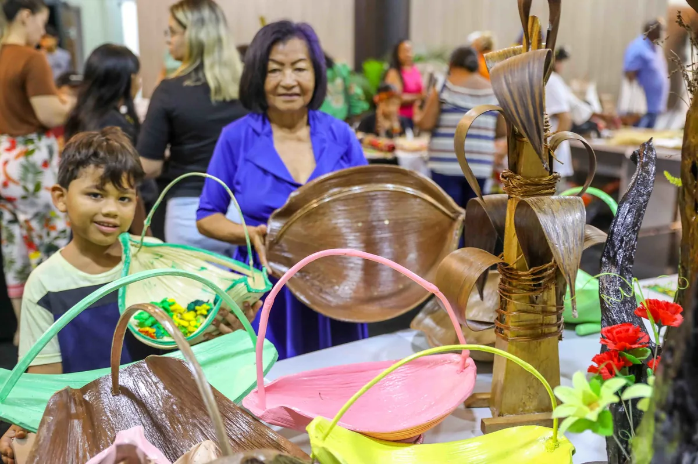

01
01
PAISAGEM MONUMENTAL
Monte Roraima
Uma travessia entre tepuis, vales de cristais e o silêncio de uma das formações mais antigas do planeta.
Portal de Roraima
Um convite para descobrir paisagens ancestrais, histórias que atravessam fronteiras e a cultura viva do extremo norte.

PONTO MAIS ALTOMonte Roraima
PacaraimaTERRITÓRIO223 mil km²
Escolha seu caminho
Roraima se revela em camadas. Comece pela paisagem que mais combina com a sua curiosidade.
01
Uma travessia entre tepuis, vales de cristais e o silêncio de uma das formações mais antigas do planeta.
 02
02
A capital planejada às margens do Rio Branco revela orlas, praças, sabores e um jeito leve de viver.

03Povos, festas, arte e culinária que fazem de Roraima um território de encontros e muitas vozes.
Um território raro
Aqui, a Amazônia encontra o lavrado, a serra encontra o céu e três fronteiras se encontram no mesmo horizonte. Roraima é pequeno no mapa, mas gigante nas possibilidades.
Formações de milhões de anos moldam trilhas e mirantes únicos.
O Rio Branco costura cidades, comunidades e modos de vida.
Brasil, Venezuela e Guiana em um território de encontros.
Culturas indígenas mantêm o território em movimento.
Cultura que permanece
Macuxi, Wapichana, Taurepang, Yanomami e tantos outros povos guardam conhecimentos que atravessam gerações. Conhecer Roraima também é aprender a escutar.
ARTE E TERRITÓRIO
Damurida, caxiri, peixes dos rios e ingredientes que só o norte explica.
Do boi-bumbá às celebrações indígenas, o calendário pulsa o ano inteiro.
Linha do tempo
A história de Roraima é feita de ocupações, deslocamentos e resistências. Uma narrativa que continua sendo escrita.
Povos indígenas ocupam e cuidam destas terras há milhares de anos.
A presença portuguesa se instala na confluência dos rios Uraricoera e Tacutu.
Roraima passa a ter uma nova organização administrativa e política.
A Constituição transforma o antigo território em um dos mais jovens estados do Brasil.
Mapa de possibilidades
Orla Taumanan · centro histórico
Monte Roraima · fronteira
Cachoeiras · serras · Makunaima
Trilhas · lavrados · comunidades
Rio Branco · pesca · floresta
Portal da Amazônia · BR-174
| Município | Região | Distância da capital | Destaque |
|---|---|---|---|
| Boa Vista | Capital | — | Orla Taumanan |
| Caracaraí | Centro-Sul | ≈ 140 km | Rio Branco e pesca esportiva |
| Amajari | Norte | ≈ 160 km | Trilhas e lavrado |
| Pacaraima | Norte | ≈ 215 km | Acesso ao Monte Roraima |
| Rorainópolis | Sul | ≈ 290 km | Portal da Amazônia |
| Uiramutã | Norte | ≈ 300 km | Cachoeiras e serras |
Uma primeira imersão que mistura cidade, lavrado e serra sem pressa — do jeito que o norte pede.
Boa Vista, Orla Taumanan e um fim de tarde olhando o Rio Branco.
Paisagens abertas, comunidades e o céu enorme do norte de Roraima.
Pacaraima e a porta de entrada para a experiência do Monte Roraima.
Melhor época: outubro a abril · clima de aventura
Fale com a gente
Tem uma dúvida, sugestão ou quer contar uma história de Roraima? Escreva para o portal.
oi@conhecaroraima.com.br